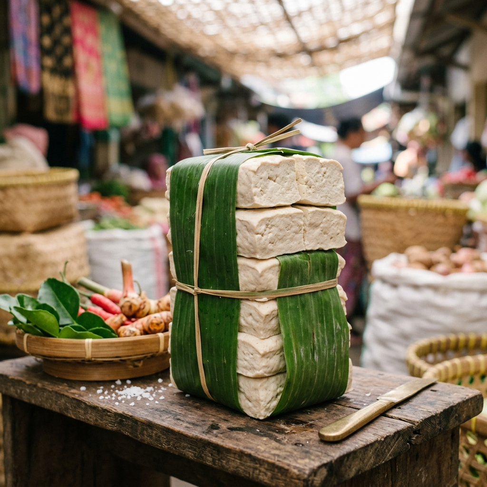
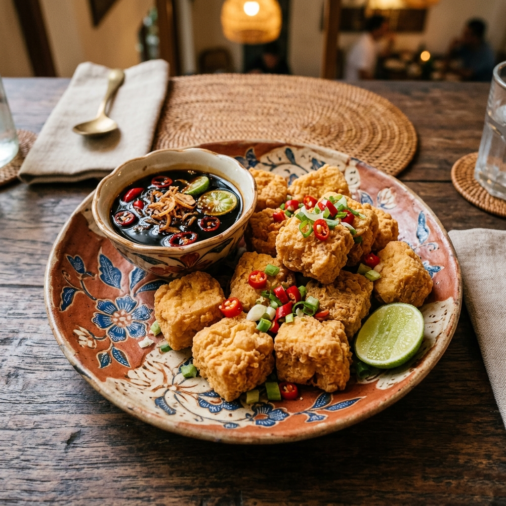
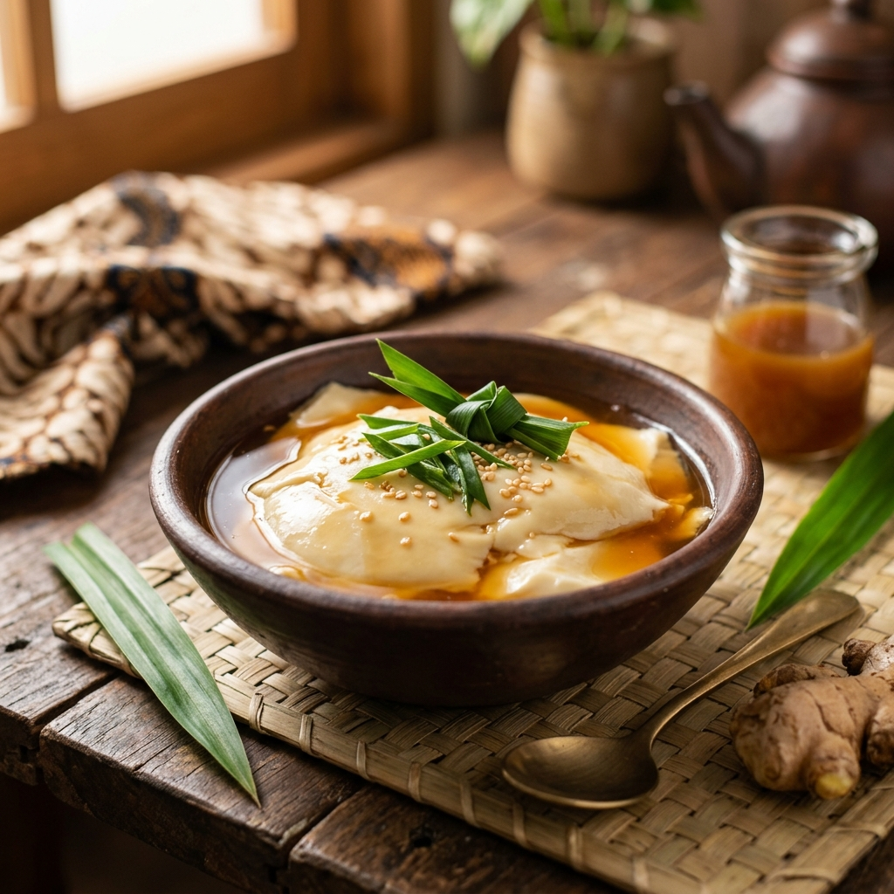

Dibuat dari mie pilihan, tanpa pengawet, dan diolah secara higienis oleh Mas Fajar di Surakarta.
Dari tahun 2005, Mie Ayam Kartotiyasan Mas Fajar kini menjadi salah satu UMKM kuliner terpercaya di Surakarta yang melayani ratusan pelanggan setiap harinya.
Tanpa pengawet, pewarna, atau bahan kimia berbahaya. Sehat untuk keluarga Anda.
Terbuat dari resep turun-temurun berkualitas agar menciptakan cita rasa otentik khas Surakarta.
Proses produksi yang bersih dan terkontrol untuk menghasilkan mie ayam berkualitas tinggi.
Membuka lapangan pekerjaan dan memberdayakan masyarakat lokal di sekitar Surakarta.
Kami menyediakan berbagai varian Mie Ayam berkualitas premium yang siap disajikan hangat untuk Anda dan keluarga.

Mie Ayam dengan tekstur kenyal dan kuah gurih khas Kartotiyasan, cocok untuk semua kalangan.

Mie Ayam lengkap dengan bakso kenyal pilihan, kuah kaldu segar, dan taburan bawang goreng renyah.

Mie Ayam porsi besar dengan topping ayam melimpah, pangsit, bakso, dan kuah kaldu ekstra gurih.
Setiap langkah produksi kami lakukan dengan penuh ketelitian dan mengutamakan kebersihan agar cita rasa selalu terjaga.
Kami hanya memilih tepung terigu dan bahan berkualitas tinggi dari pemasok lokal terpercaya untuk memastikan rasa dan tekstur mie terbaik.
Tepung diaduk bersama bahan pilihan lainnya, lalu dibentuk dan dipotong menjadi untaian mie yang kenyal dan elastis.
Kuah kaldu ayam dimasak perlahan dengan rempah pilihan hingga menghasilkan cita rasa gurih yang kaya dan otentik.
Mie disajikan hangat dengan topping ayam suwir berbumbu, bakso, pangsit, dan pelengkap lainnya yang menggugah selera.
Kepuasan pelanggan adalah prioritas utama kami. Berikut testimoni dari pelanggan setia Mie Ayam Kartotiyasan Mas Fajar.
"Mie Ayamnya selalu segar dan enak! Sudah berlangganan lebih dari 5 tahun dan tidak pernah kecewa. Kuahnya gurih banget, khas Surakarta."
"Sebagai pemilik kantin, saya butuh mie ayam yang berkualitas dan harga terjangkau. Mie Ayam Kartotiyasan Mas Fajar jawabannya! Pelanggan saya puas."
"Mie Ayam Spesialnya top banget! Ayamnya banyak, mienya kenyal, dan kuahnya nampol. Anak-anak suka banget! Pasti selalu repeat order tiap minggu."
Pesan sekarang melalui WhatsApp dan nikmati Mie Ayam Kartotiyasan Mas Fajar. Tersedia di Jalan Manduro, Surakarta.
Jl. Manduro
Kartotiyasan
Surakarta, Jawa Tengah
+62 881-2484-710
Senin - Sabtu: 07.00 - 17.00
Minggu: 07.00 - 13.00